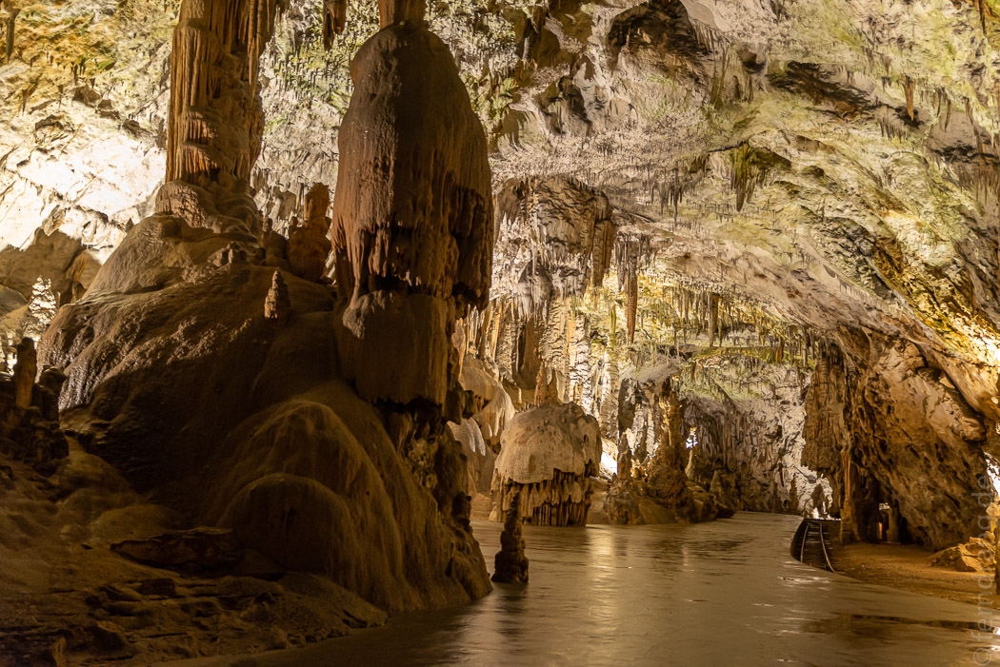

Für das ganze Land waren mehrere Tage Dauerregen angesagt. Das hat uns unseren Plan verdorben, ins Soča-Tal zu fahren. Aber ganz Slowenien? Nein! Nordöstlich des Zentrums liegt das zauberhafte, kleine Logar-Tal, in dem es halbwegs trocken bleiben sollte.
Auf dem Weg dorthin haben wir einen Halt bei der Höhlenburg Predjama gemacht. Die Festung klebt hübsch in einer ausgehöhlten Felswand und war Schauplatz mittelalterlicher Heldengeschichten.
Nicht weit davon liegt die gewaltige Höhle Postojna. Sie ist so lang, dass eine Schmalspurbahn hineingelegt wurde. An die zehn Minuten sind wir nicht gerade langsam hineingefahren, was einen ersten Eindruck der enormen Ausmaße vermittelte. Danach wurden wir fast eine Stunde über sehr gut angelegte und beleuchtete Wege durch eine Welt aus versteinertem Blumenkohl geführt. Eigentlich sind wir Höhlenmuffel. Vor allem, wenn zu befürchten steht, dass man in jeder zweiten Stalaktite die Jungfrau Maria oder einen Elefantenrüssel sehen soll. Aber Postojna war wirklich beeindruckend.
Mit dem Regen im Rückspiegel sind wir durchs halbe Land gefahren. Auf immer kleineren Straßen haben wir uns wieder in die Berge hochgeschraubt bis wir im friedlichen Logar-Tal ankamen. Tatsächlich war das Wetter hier noch gut. Links und rechts flankieren dunkel bewaldete Hänge die flache Almwiese. Am Ende des Tals ragt majestätisch und schroff eine Berggruppe auf. Der Grat ist scharf, wie abgebrochen und reißt Löcher in die Wolken. Die Hauptattraktion war für uns aber der Saunabereich des Berghotels mit Blick auf die Berge (inklusive Mutprobe im unbeheizten Aussenschwimmbad). 